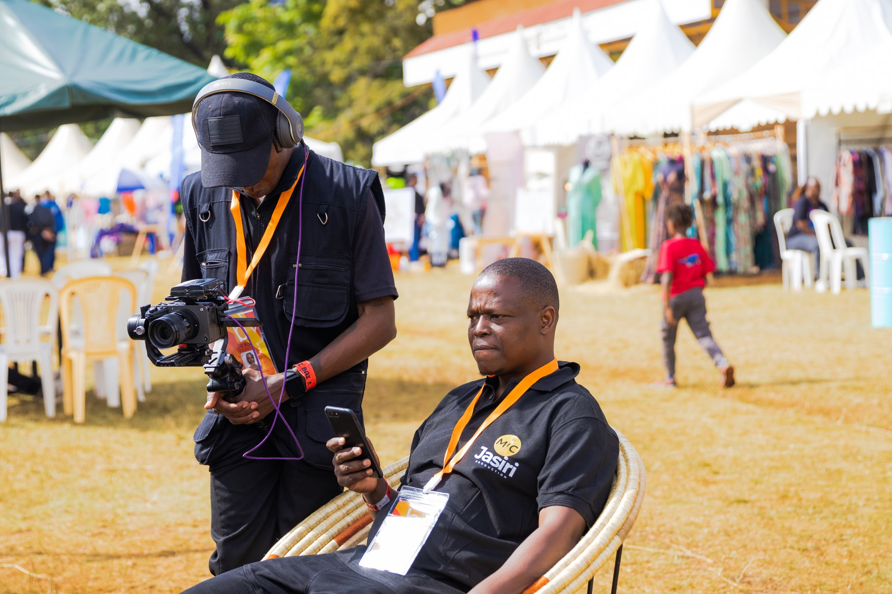
Work in motion.
Commercial, event, conference and live production from Nairobi.
Browse the work, by craft.
Three featured productions, followed by focused galleries from the existing Mic-Jasiri archive. Choose a category to see one body of work at a time.
Featured productions
Complete case studies with a clear view of the assignment, production approach and final imagery.
Events & live
Festival coverage, performance photography and the production team working inside the action.
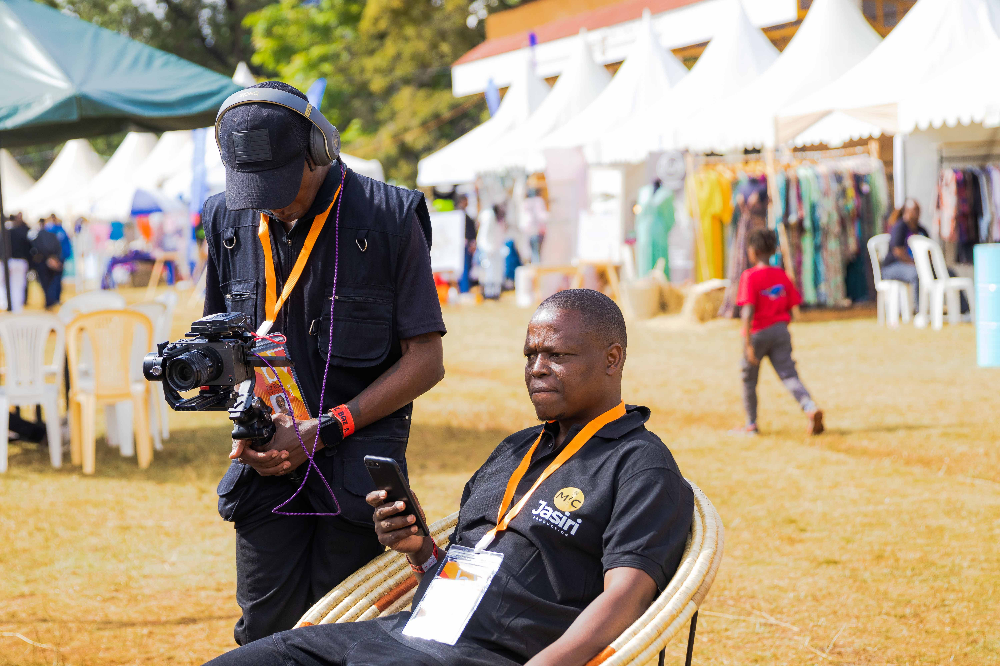

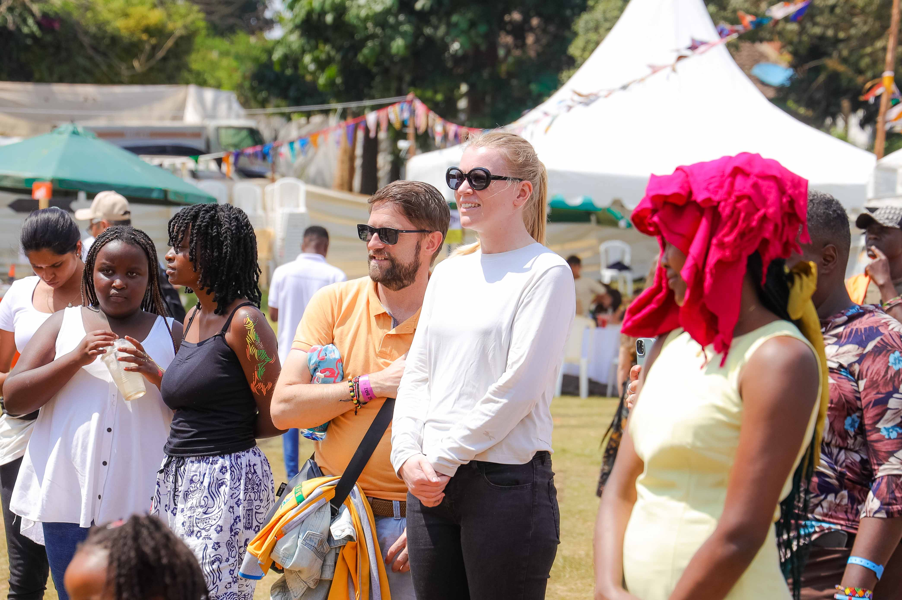

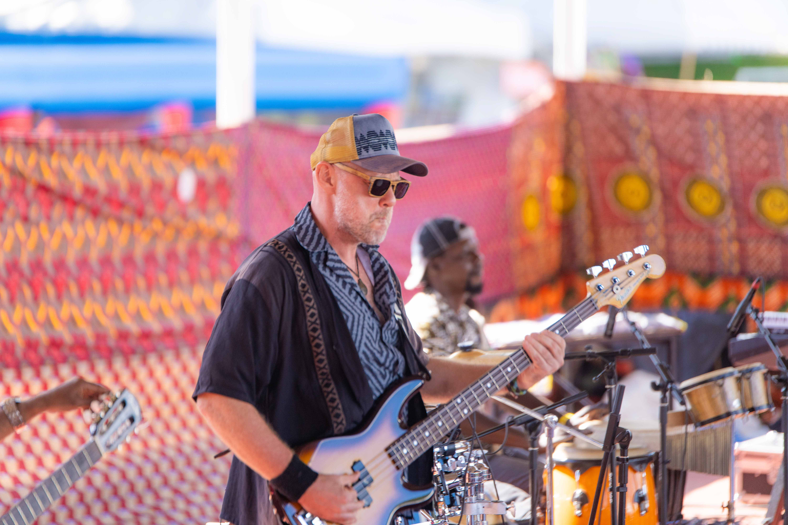
Conference coverage
Speakers, audiences and decisive moments captured across the room without interrupting the programme.


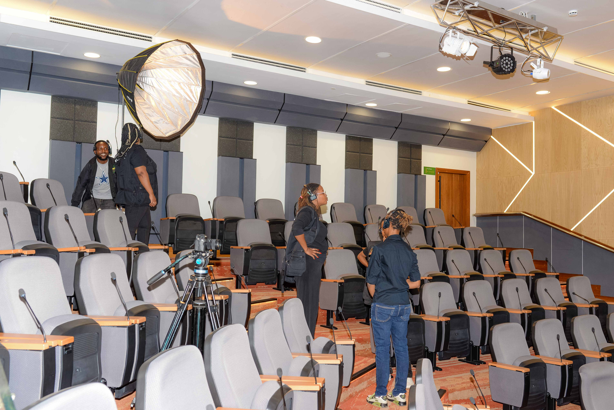
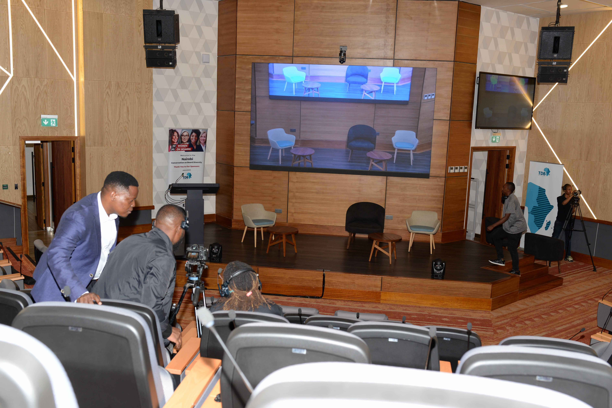
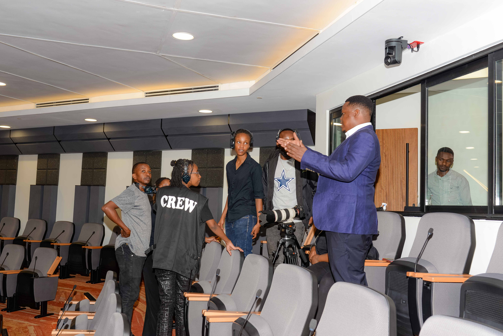
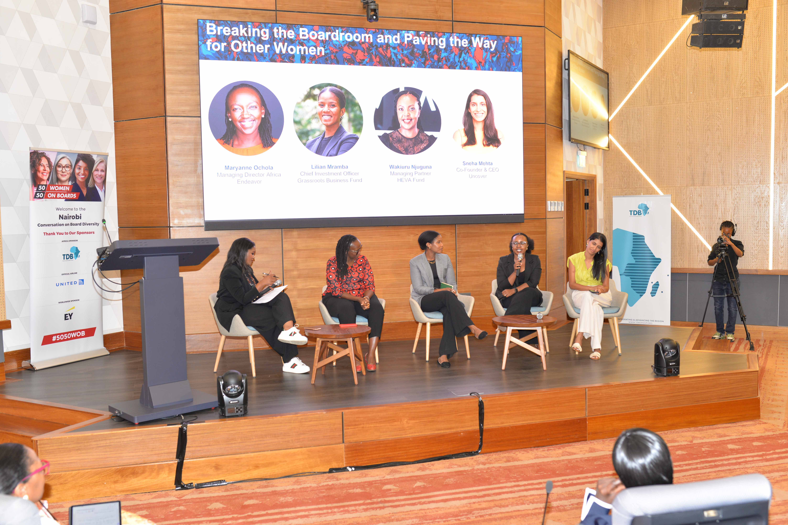
Commercial production
A focused campaign presentation using the verified Manama Spa production image already in the archive.

Manama Spa
Television commercial production and digital strategy, presented as a concise case study.
View case studyProduction archive
On-location production, multi-camera control and working moments from the existing image library.
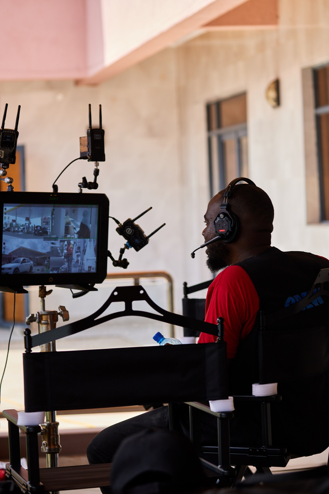
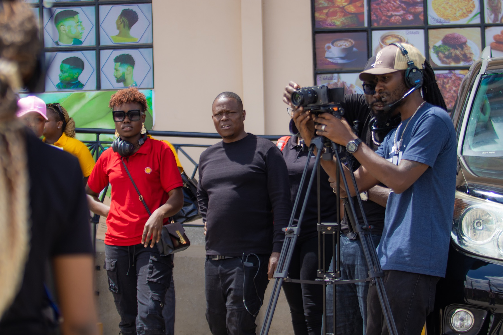
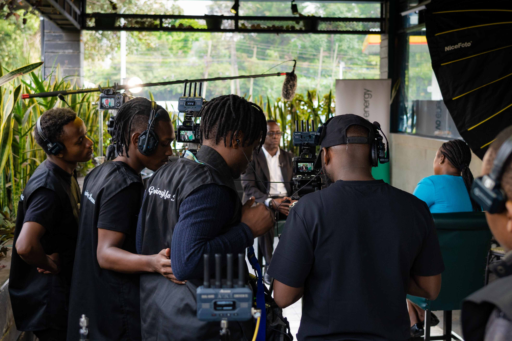


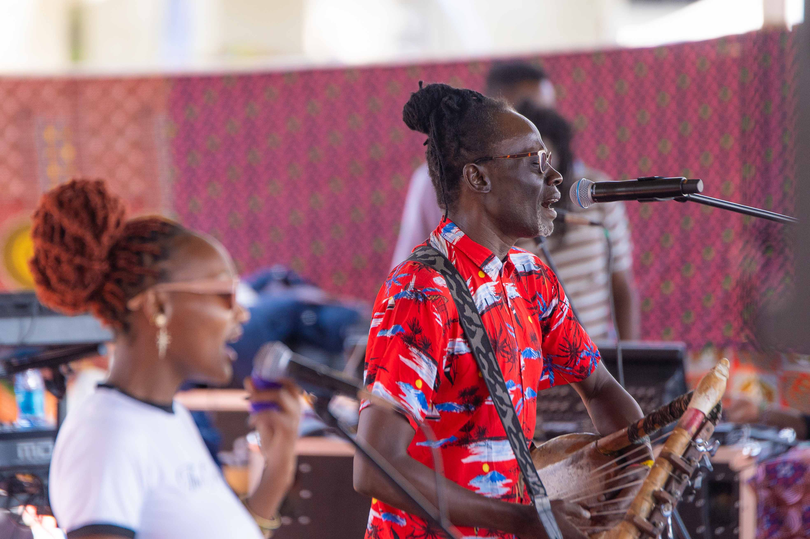